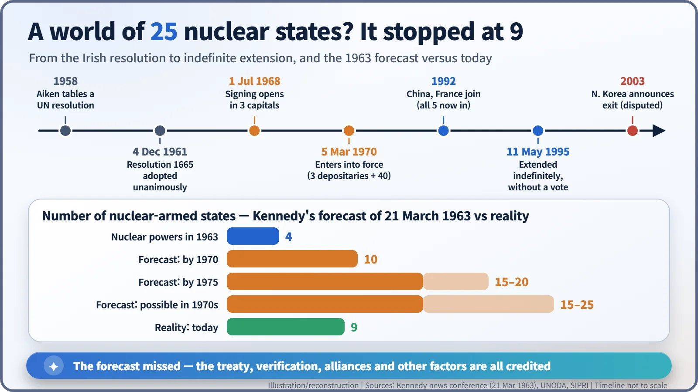
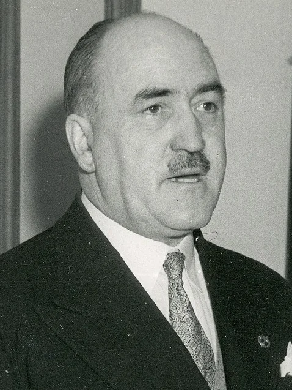
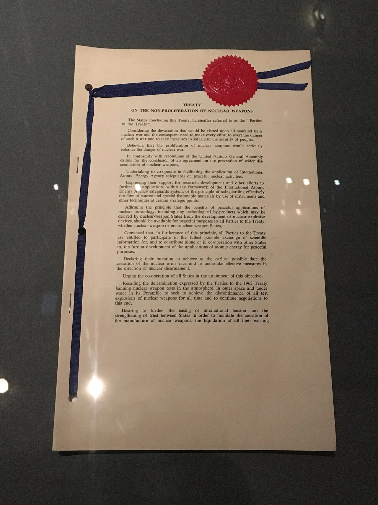
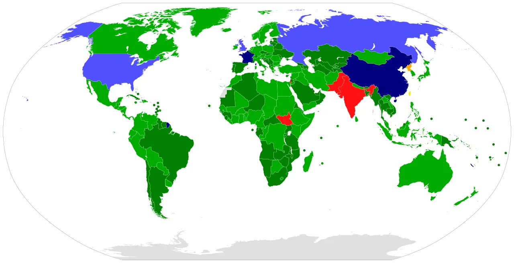

Nuclear History · 233
A Bargain Between the Haves and the Have-Nots — The Nuclear Non-Proliferation Treaty (NPT, 1968/1970)
Kennedy feared 25 nuclear-armed nations; a treaty built as a ledger of trades helped hold the number to nine.
In 1963 President Kennedy feared that 15 to 25 nations might have nuclear weapons by the 1970s. Today there are nine. The Treaty on the Non-Proliferation of Nuclear Weapons, opened for signature on 1 July 1968 and in force since 5 March 1970, is a bargain: states without the bomb promise not to acquire it and to accept IAEA safeguards, the five recognized nuclear-weapon states promise not to spread it, and all parties promise to negotiate disarmament in good faith.
The forecast that missed
Suppose the forecast of 1963 had come true. Today there might be twenty or more countries with nuclear weapons. At a news conference on the evening of 21 March 1963, President John F. Kennedy (1917–1963) admitted that he was "haunted by the feeling" that, unless the effort to stop the spread succeeded, there might be "10 nuclear powers instead of 4" by 1970, and "15 or 20" by 1975. He could see a president in the 1970s facing "a world in which 15 or 20 or 25 nations may have these weapons." [3]
It did not turn out that way. Today nine states possess nuclear weapons. Any explanation of that gap sooner or later reaches the Treaty on the Non-Proliferation of Nuclear Weapons, better known as the NPT.

A small country's persistent resolution
The push did not start with a superpower. In 1958 Ireland's Minister for External Affairs, Frank Aiken (1898–1983), put a resolution to the UN General Assembly aimed at stopping nuclear weapons from spreading to more countries. It became known as the "Irish resolution." Aiken kept coming back, year after year, with revised texts. On 4 December 1961 the General Assembly adopted Resolution 1665 unanimously, a rare moment when the United States and the Soviet Union raised their hands on the same side of an arms-control question. [6] [7]

Then, in October 1964, China carried out its first nuclear test, and the club grew to five. The sense that proliferation was no longer hypothetical sharpened. From 1965 the Eighteen Nation Committee on Disarmament in Geneva took up serious negotiations, and in August 1967 the United States and the Soviet Union each tabled identical drafts.
1 July 1968: three cities at once
The treaty opened for signature on 1 July 1968 in London, Moscow and Washington simultaneously, because the United Kingdom, the Soviet Union and the United States were its depositary governments, the custodians of the treaty documents. Representatives of 56 nations gathered in the East Room of the White House, where President Lyndon B. Johnson (1908–1973) recalled that he had "described this treaty as the most important international agreement since the beginning of the nuclear age." At the same ceremony he announced that Washington and Moscow had agreed to begin talks on limiting strategic nuclear weapons, the talks that would become SALT. [4] [5]
Irish accounts say Aiken was the first to be invited to sign, in Moscow; other sources name Finland as the first signatory, so the "first" depends on which record you read.

Once the three depositaries and 40 other signatories had ratified, the treaty entered into force on 5 March 1970. [1]
The skeleton of the deal: a ledger of trades
The easiest way to read the NPT is as a ledger: each side gives something and gets something. First, the treaty defines a "nuclear-weapon State" as one that "has manufactured and exploded a nuclear weapon or other nuclear explosive device prior to 1 January 1967" (Article IX). In practice that meant five countries: the United States, the Soviet Union, the United Kingdom, France and China. [1]
- Non-nuclear-weapon states promise not to receive, make or otherwise acquire nuclear weapons, and not to seek help in doing so (Article II). They also accept verification by the International Atomic Energy Agency, known as safeguards, to check that nuclear material used for peaceful purposes is not diverted to weapons (Article III).
- Nuclear-weapon states promise not to hand nuclear weapons to anyone and not to help any non-nuclear state make them (Article I).
Two more promises bind everyone. Article VI says that each party "undertakes to pursue negotiations in good faith on effective measures relating to cessation of the nuclear arms race at an early date and to nuclear disarmament." Article IV says that nothing in the treaty affects "the inalienable right" of all parties to develop nuclear energy for peaceful purposes, without discrimination.
![Diagram of the NPT bargain: on the left, non-nuclear-weapon states promise under Article II not to receive or make nuclear weapons and under Article III to accept IAEA safeguards; on the right, the five weapon states (US, USSR, UK, France, China) promise under Article I not to transfer or assist and under Article VI to negotiate in good faith, with no deadline; arrows labelled Bargain connect them; a band below shows Article IV, the inalienable right to peaceful use for all parties, and Article IX, the definition of a weapon state as one that exploded a device before 1 January 1967](../../assets/images/history/233-npt/fig1-npt-bargain.webp)
People often speak of the NPT's "three pillars": non-proliferation, disarmament and peaceful use. The phrase is a later shorthand; it does not appear in the treaty itself. And Article VI sets no deadline for disarmament. That blank space would seed decades of argument.
Twenty-five years later, choosing "forever"
The treaty contained its own checkpoint: 25 years after entry into force, a conference would decide whether it should continue indefinitely or be extended for fixed periods (Article X). In the meantime the membership changed shape. In 1991 South Africa dismantled the nuclear weapons it had built and joined as a non-nuclear-weapon state. In 1992 China and France acceded, so that all five recognized nuclear-weapon states were finally inside. Ukraine joined as a non-nuclear-weapon state in 1994.
On 11 May 1995 the Review and Extension Conference in New York decided, without a vote, to extend the treaty indefinitely, in a package with decisions to strengthen the review process and to set out principles for non-proliferation and disarmament. Today the treaty has 191 states parties by the UN's count. India, Israel, Pakistan and South Sudan have never joined. North Korea joined in 1985 and announced its withdrawal in 2003; its legal status remains disputed. [2]
An unequal deal, or a less dangerous world?
Opinions still divide. India refused to join, calling the treaty discriminatory because it froze the world into countries that had nuclear weapons before 1967 and countries that could never have them. Many non-nuclear-weapon states have long complained that disarmament under Article VI is moving far too slowly; that frustration helped produce a separate Treaty on the Prohibition of Nuclear Weapons in 2017. The nuclear-weapon states reply that the global stockpile has fallen from a peak of roughly 70,000 warheads around 1986 to about 12,000 in 2025, according to estimates by the Federation of American Scientists. Review conferences, held every five years, ended without an agreed final document in 2015, in 2022 and again in May 2026. [2]
Still, many researchers credit the NPT and IAEA safeguards as a major reason the number of nuclear-armed states stopped at nine, alongside other factors such as allies' nuclear umbrellas and the sheer technical and financial cost of a weapons programme. An imperfect promise helped make Kennedy's nightmare forecast miss.
